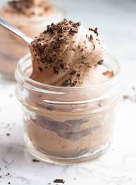

Chocolate mousse recipe
Ingredients
- Heavy cream
- Powdered Sugar
- Cocoa Powder
- Vanilla flavoring
Steps
- First off, start by sifting the Cocoa Powder
- Make sure to chill a mixing bowl before whipping the mousse for about 30 minutes
- Then start to pour the heavy whipping cream into the chilled bowl
- Now, use an electric mixer to whip the cream until it becomes frothy
- Once done with the electric mixer, use a spatula to avoid over mixing it(You can avoid overmixing by not mixing it anymore when the mousse starts taking shape.
- Your Chocolate mousse is now done, enjoy!
Back to home